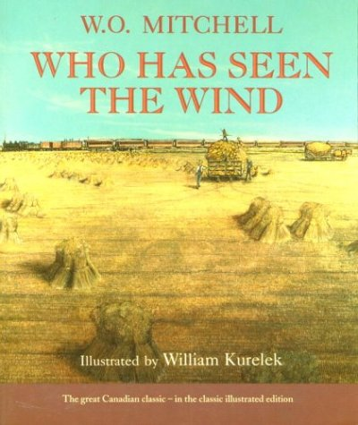
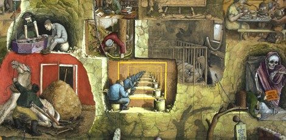

First Meeting of Ukrainian Women's Association of Canada in Saskatchewan. Finished in 1966.

William did the illustration for Who Has Seen the Wind in 1974.

Van Halen took their album cover for THE MAZE from this collection.